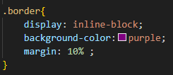
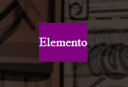
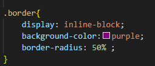
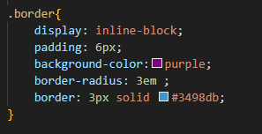
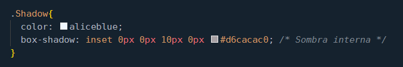

La etiqueta border en CSS se usa para definir un borde al rededor de el elemento se puede personalizar de varias maneras:
Redondea los bordes de los elementos, principalmente se usa en botones, se pueden crear desde formas redondeadas,
hasta circulares completos
Por ejemplo si no usamos border-radius en un elemento:
Entonces:
Pero si usamos border-radius se redondean las esquinas del elemento:
O solo un poco en las esquinas
Esta propiedad como todas las demas tambien se puede poner en una sola linea
Se pueden aplicar estilos a los bordes, por ejemplo decir el grosor del borde, el color, o si es una
linea continua, a guiones etc, para esto existen tres propiedades individuales
Hace referencia al grosor del borde, un borde mas grueso llama mas la atencion y
muestra mayor importancia al elemento
Como lo indica el nombre define el color del borde igual se pueden usar codigos hexadecimales, RGB, o RGBA
El uso de colores de bordes se usa para mejorar y dar consistencia al diseño
Define el estilo del borde asi:
solid: Línea continua, el más común.
dashed: Línea discontinua o guiones.
dotted: Puntos.
double: Línea doble.
none: Sin borde.
Incluso podemos tomar las tres anterioress y usarlas como propiedad abreviada
Permite dar una sombra a la caja o elemento, puede dar profundidad o mejorar el diseño
Contiene 5 valores dentro de la propiedad:
desplazamiento-horizontal: desplazamiento en el eje x, positivo se mueve hacia la derecha, negativo a la izquierda
desplazamiento-vertical: desplazamiento en el eje y, positivo se mueve hacia arriba, negativo hacia abajo
desenfoque: Controla el difuminado de la sombra, a mayor valor, mas difusa (no se debe usar valores negativos)
extensión:Define el tamaño de la sombra: expandiendola o reduciendola (valor positivo agranda, negativo encoge)
color : Define el color de la sombra(como siempre en css se puede usar hexa,RGB, RGBA)
inset: Esta propiedad funciona para usar sombra interna
